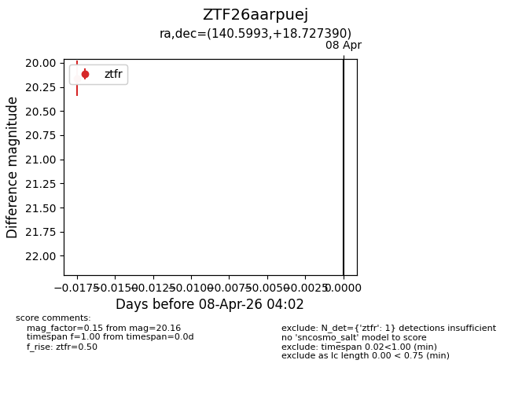
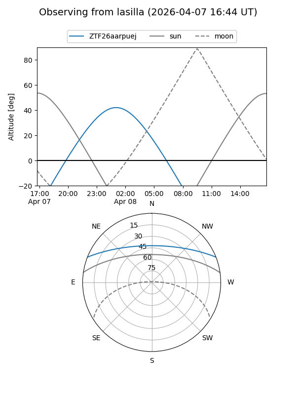
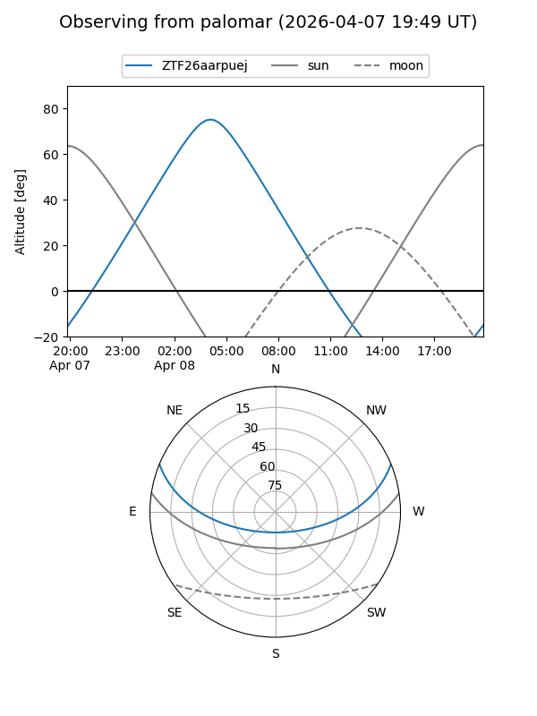

ZTF26aarpuej
Target ZTF26aarpuej at 2026-04-08 04:06
Aliases and brokers:
FINK: link
Lasair: link
ALeRCE: link
alt names
ZTF26aarpuej (ztf,fink_ztf)
Coordinates:
equatorial (ra, dec) = 140.5993,+18.72739
equatorial (HMS+DMS) = 09:22:23.83,+18:43:38.61
galactic (l, b) = (211.2934,+41.47562)
Flags:
Photometry:
last ztfr=20.16
1 ztfr detections
Lightcurve

Visibility


Additional plots